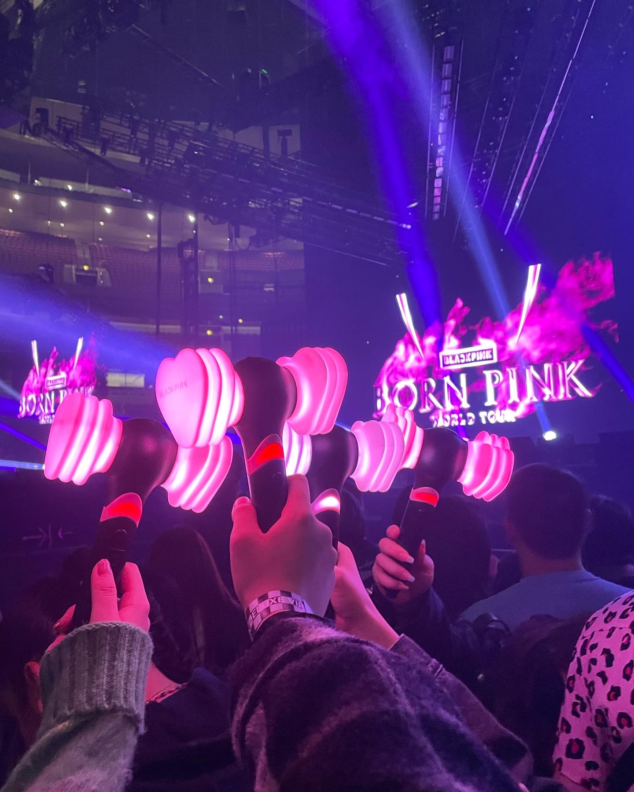
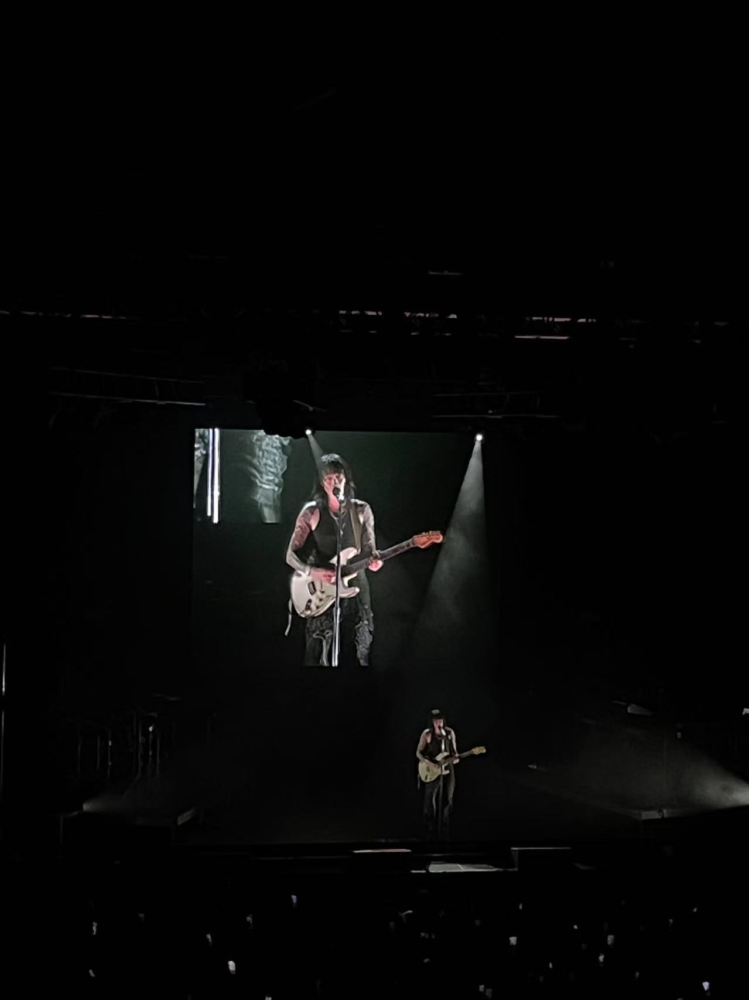
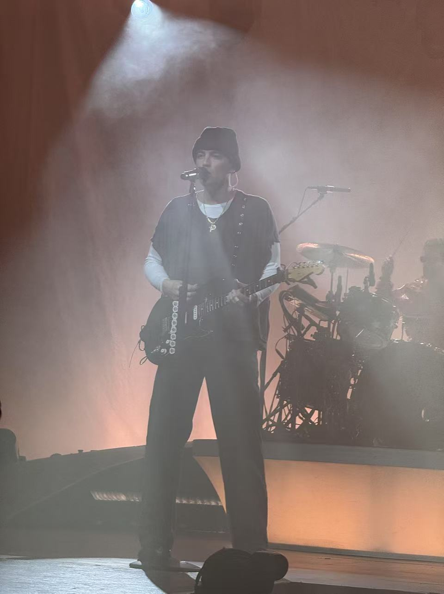
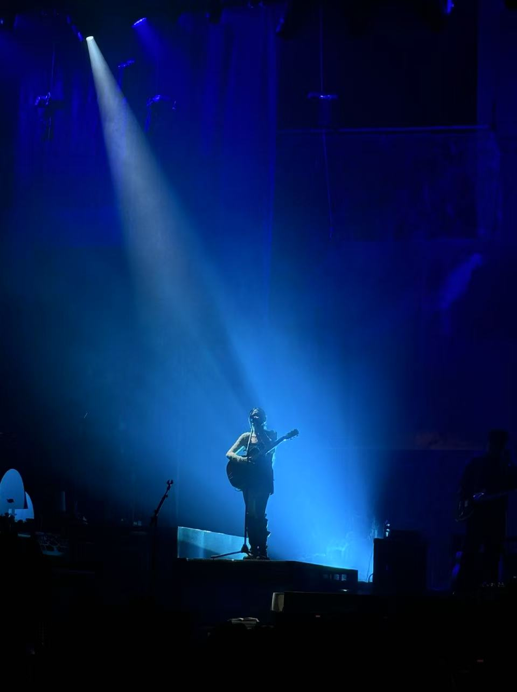
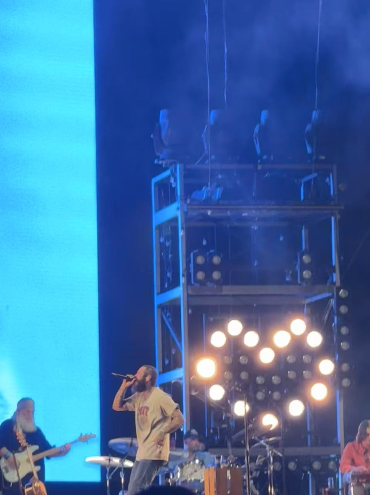

As I mentioned in my introduction, I went to a lot of conerts in U.S. In the following, I want to share every concert I've been to.
This photo was taken at the Blackpink Born Pink Concert on November 12, 2022, at United Center in Chicago. My friends and I held up our Blackpink lightsticks, glowing pink in the dark venue. The stage was bright with amazing visuals, and the energy of the crowd was unforgettable.
This photo was taken at the Keshi concert on March 14, 2023, at Roadrunner in Boston. Keshi is a talented singer-songwriter who creates music that resonates with me. The concert was intimate, and I felt connected to the artist and the music.
This photo was taken at the LANY concert on April 11, 2024, at MGM Music Hall at Fenway in Boston. The stage was set with atmospheric lighting as the band performed songs from their new album, "a beautiful blur." Throughout the concert, there were both lyrical, heartfelt songs and intense, burning tracks that energized the crowd.
This photo was taken at the NIKI concert on September 7, 2024, at MGM Music Hall at Fenway in Boston. I bought the ticket at the last minute, making the experience even more exciting. She performed many songs from her new album, "Buzz," which I hadn’t started listening to yet, adding an element of surprise to the night.
This photo was taken at the Post Malone concert on September 18, 2024, at Fenway Park, an outdoor baseball stadium. The open space made the show feel even bigger. The lights were bright, the music was loud, and everyone sang along to both emotional and energetic songs.
